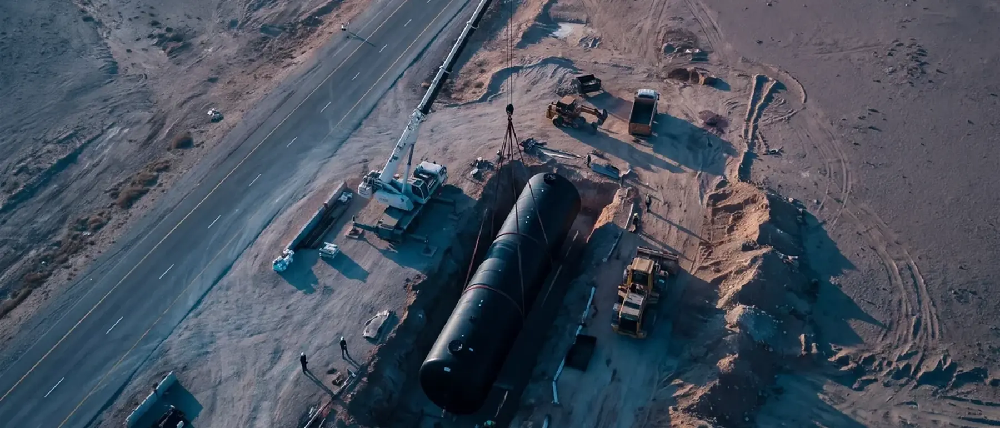

- Home
- Projects
Our work, on the map
A selection of projects from recent years: construction, renovations at operating stations and fuel infrastructure, for the major fuel companies and private developers.
What we did, and how
Fifteen representative projects: fuel infrastructure for data centers across Israel, construction of new stations, rebuilds, renovations at operating stations and an LPG station.
-
Fuel Infrastructure for Data Centers – Akko
The data center's fuel infrastructure: tanks, feed lines and the connection to the emergency generators.
Fuel infrastructure works for the data center: the fuel tanks, the feed lines and the connection to the emergency generators, in coordination with the project's electrical consultants and regulators.
Illustrative photos from the company's work
-
Mega DC Matam – Haifa
The data center's fuel infrastructure: tanks, feed lines and the connection to the emergency generators.
Fuel infrastructure works for the data center: the fuel tanks, the feed lines and the connection to the emergency generators, in coordination with the project's electrical consultants and regulators.
Illustrative photos from the company's work
-
Anan – Afula
The data center's fuel infrastructure: tanks, feed lines and the connection to the emergency generators.
Fuel infrastructure works for the data center: the fuel tanks, the feed lines and the connection to the emergency generators, in coordination with the project's electrical consultants and regulators.
Illustrative photos from the company's work
-
Schechterman – Netanya
The data center's fuel infrastructure: tanks, feed lines and the connection to the emergency generators.
Fuel infrastructure works for the data center: the fuel tanks, the feed lines and the connection to the emergency generators, in coordination with the project's electrical consultants and regulators.
Illustrative photos from the company's work
-
Fuel Infrastructure for Data Centers – Tnuvot
The data center's fuel infrastructure: tanks, feed lines and the connection to the emergency generators.
Fuel infrastructure works for the data center: the fuel tanks, the feed lines and the connection to the emergency generators, in coordination with the project's electrical consultants and regulators.
Illustrative photos from the company's work
-
Hetzi Hinam fuel station – Holon
Rebuild: fuel infrastructure, fill piping, drainage and a tank buried four meters deep.
The construction included fuel infrastructure and fill piping for the tanks, installing the dispenser island and fuel pumps, building runoff drainage channels and installing a fuel separator. A fuel tank was buried four meters deep, including a containment liner and tank anchoring. A professional crew also carried out the electrical and communications infrastructure and the concrete slabs, through to the station's proper operation.
Illustrative photos from the company's work
-
Multi DC – Shoham
Expansion of an existing data center: underground fuel tanks and feed lines to the emergency generators.
Expansion of an operating data center. All the fuel tanks were buried underground, and from them the feed lines rise on the building wall to the emergency generators: fixed to wall supports for the full height, continuing along the top of the walls and crossing a concrete bridge between the buildings. At the base of the wall is the valve and flange manifold. The lines were painted in two colors to tell them apart in operation and maintenance.
-
New Sonol fuel station – Shoham, Beit Arif
A new Sonol fuel station we built from scratch: from an empty lot to an operating station.
Complete construction of a new fuel station for Sonol, from the foundations to the first fill: earthworks, tank pits and underground tanks, fuel piping, sumps, the forecourt, the canopy and the dispensers, to the standards of the Ministry of Environmental Protection. The station is operating today.
-
Mega DC – Modi'in
The data center's fuel infrastructure: tanks, feed lines and the connection to the emergency generators.
Fuel infrastructure works for the data center: the fuel tanks, the feed lines and the connection to the emergency generators, in coordination with the project's electrical consultants and regulators.
Illustrative photos from the company's work
-
Nover fuel station – Ashdod
Rebuild of an existing station to the strictest international environmental standards.
The station was rebuilt after demolishing the existing one: all fuel infrastructure, concrete slabs, dispenser islands and asphalt were removed. The rebuild included fiberglass fuel piping, a Stage II vapor recovery system, static grounding and cathodic protection systems, a double-wall fill system and standard 5-gallon spill containment. The station was expanded with infrastructure for car wash machines and truck access, including a retaining wall 64 meters long and 3 meters high. A large crew of skilled professionals carried out the work while maintaining high quality and meeting the schedule.
Illustrative photos from the company's work
-
Gal HaRishonim fuel station – Ashdod
General renovation of the largest fuel station in Israel. In progress.
The work includes breaking up concrete slabs, removing the existing fuel dispensers, installing new Stage II vapor recovery piping, installing rectangular sumps that prevent fuel leaking into the ground, and reinstalling the dispensers. All the station's infrastructure will meet the standards of the Ministry of Environmental Protection and the Ministry of Labor, including 5-gallon fill sumps, cathodic protection and static grounding.
Illustrative photos from the company's work
-
Mega DC – Har Tuv
The data center's fuel infrastructure, from the pit to the roof: underground tanks, feed lines, cathodic protection and the connection to the building.
Complete execution of the fuel infrastructure for a new data center, in parallel with construction of the building: excavating and lining the tank pit, a sand bed, lifting and placing large underground fuel tanks, backfill and sump chambers, laying polyethylene piping in a trench with standard marking, cathodic protection pits, the valve manifold on the building wall, and the color-coded feed lines rising to the roof to the generators.
-
New private fuel station – Be'er Tuvia
Construction of a new private fuel station, from the ground to the pump.
Construction of a new fuel station for a private developer: earthworks, tank pits, piping, sumps and the forecourt, to the standards of the Ministry of Environmental Protection.
Illustrative photos from the company's work
-
LPG (autogas) station – Dimona
Construction of an LPG station under strict supervision of Pazgas engineers and the standards of the Ministry of Environmental Protection and the Ministry of Labor.
The work kept the required distances from electrical pits and trenches, and included installing a water monitor for fire protection and more. Two LPG vessels were buried two meters deep and a concrete slab was poured to anchor them; electrical and communications infrastructure was prepared, trenches were dug, LPG systems installed, concrete slabs poured, an air compressor installed beside the vessels, the dispenser island and roof built and the dispenser installed.
Illustrative photos from the company's work
-
Dor Alon fuel station – Eilot
A comprehensive renovation carried out while the station operated, with strict attention to the safety of customers and staff.
The renovation included breaking up concrete slabs and excavating about two meters deep, removing collapsed sumps above the fuel tanks and building new concrete sumps to the standards of the Ministry of Environmental Protection. The fill piping was replaced, the contaminated soil was removed to a licensed site, clean new soil was placed and a new concrete slab was poured.
Illustrative photos from the company's work

Rendering · Placing an underground tank
Every station starts with a hole in the ground. What is built in it correctly, to the standard, lasts for decades without opening the forecourt again.
Let's talk.
Planning a new station, an upgrade, or fuel infrastructure for emergency generators? A short conversation at the start saves expensive fixes later. No obligation.
Arrange a call on WhatsApp